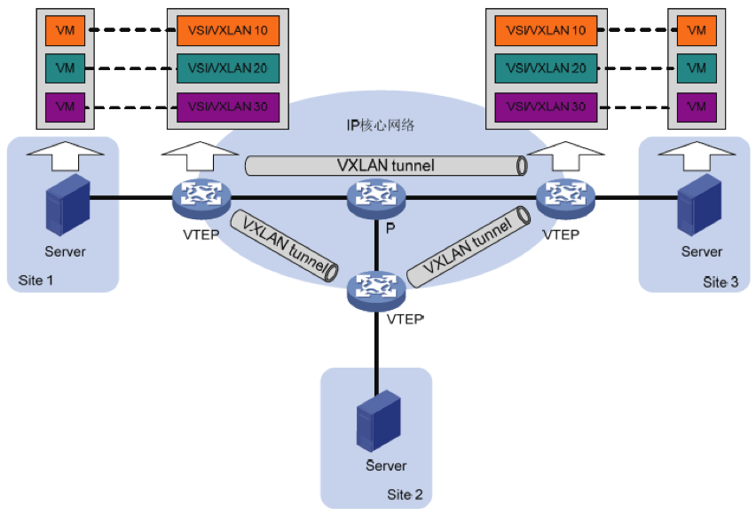
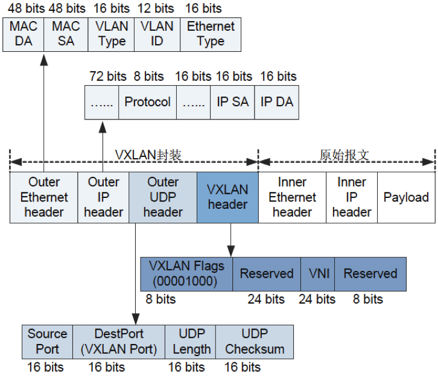
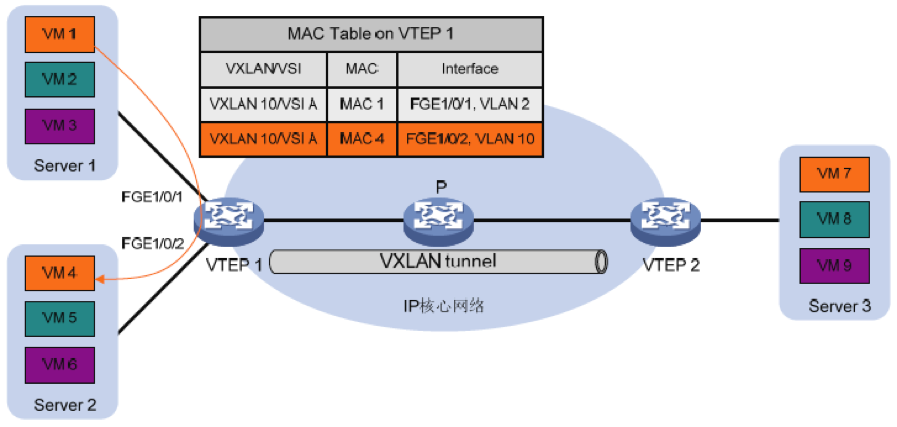
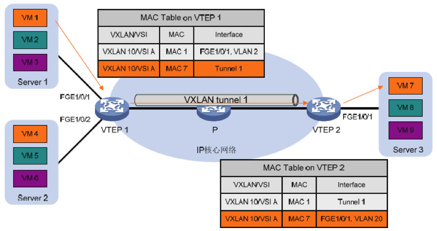

11.1. VXLAN简介¶
11.1.1. 概述¶
在云计算中，大量的采用和部署虚拟化是一个基本的技术模式。而服务器虚拟化技术的广泛部署，增加了数据中心的计算密度。同时为了实现业务的灵活变更，虚拟机需要在网络中不受限制的迁移。
虚拟机数量的快速增长与虚拟机迁移业务的日趋频繁，给传统的“二层+三层”数据中心网络带来了新的挑战：
- 虚拟机规模受网络设备MAC地址表项规格的限制
- 传统网络的VLAN隔离能力有限，
- 在传统的二层域中，虚拟机迁移范围受限。
VXLAN（Virtual eXtensible Local Area Network）虚拟扩展本地网络，是NVO3（Network Virtulization over Layer3）中的一种网络虚拟化技术。VXLAN采用MAC in UDP的报文封装方式，将二层报文用三层协议进行封装，可实现二层网络在三层范围内进行扩展，同时满足数据中心大二层虚拟迁移和多租户的需求。
VXLAN具有如下优点：
降低对MAC地址规格的需求。
虚拟机发出的数据包封装在UDP，使用物理网络的IP地址、MAC地址作为外层头进行封装，对网络只表现为封装后的参数，降低了对MAC地址规格的需求。
满足用户的大量隔离需求。
VXLAN采用VNI（VXLAN Network Identifier）进行用户标识。VNI由24比特组成，支持多达16M的VXLAN段，从而满足了大量的用户标识。
虚拟机迁移不受网络架构限制。
VXLAN通过采用MAC in UDP封装来延伸二层网络，将以太报文封装在IP报文之上，通过路由在网络中传输，无需关注虚拟机的MAC地址。且路由网络无网络结构限制，通过路由网络，虚拟机迁移不受网络架构限制。
11.1.2. VXLAN网络模型¶
11.1.2.1. 角色组成¶
VXLAN网络模型示意图
VXLAN网络中有以下角色组成：
- VM（Virtual Machine）虚拟机 在一台服务器上可以创建多台虚拟机，不同的虚拟机可以属于不同的VXLAN。属于相同 VXLAN的虚拟机处于同一个逻辑二层网络，彼此之间二层互通。属于不同VXLAN的虚拟机之间二层隔离。
- VTEP（VXLAN Tunnel Endpoints）VXLAN隧道端点 VXLAN网络的边缘设备，是VXLAN隧道的起点和终点，VXLAN报文的相关处理均在这上面进行。VTEP既可以是一台独立的网络设备，也可以是虚拟机所在的服务器。
- VNI（VXLAN Network Identifier）VXLAN 网络标识符 VNI是类似于VLAN ID。一个VNI代表了一个VXLAN段，属于不同VXLAN的虚拟机之间不能直接进行二层通信。
- VXLAN隧道 VXLAN隧道是建立在两个VTEP之间的一条虚拟通道，用来传输经过VXLAN封装的报文。VXLAN报文中源IP地址为本节点的VTEP地址，VXLAN报文中目的IP地址为对端节点的VTEP地址，一对VTEP地址就对应着一个VXLAN隧道。
- VSI（Virtual Switching Instance）虚拟交换实例 VTEP上为一个VXLAN提供二层交换服务的虚拟交换实例。VSI与VXLAN一一对应，可以看作是VTEP上的一台基于VXLAN 进行二层转发的虚拟交换机, 它具有传统以太网交换机的所有功能，包括源 MAC 地址学习、MAC 地址老化、泛洪等。
11.1.2.2. 报文格式¶
VXLAN报文格式
外层Ethernet头封装。
- SA：发送报文的虚拟机所属的VTEP的MAC地址。
- DA：目的虚拟机所属VTEP上路由表中智联的下一跳MAC地址。
- VLAN Type：可选字段，当报文中携带VLAN Tag时，该字段取值为0x8100。
- Ethernet Type：以太报文类型，IP协议报文该字段取值为0x0800。
外层IP头封装
- 源IP地址为发送报文的虚拟机所属VTEP的IP地址；目的IP地址是目的虚拟机所属的VTEP的IP地址。
外层UDP封装
- 目的UDP端口号是4789。源端口号是内层以太报文头通过哈希算法计算后的值。
VXLAN头封装
- Flags：8比特，取值为00001000
- VNI：VXLAN网络标识，24比特，用于区分VXLAN段
- Reserved：24比特和8比特，必须设置为0。
11.2. Connetos支持的VXLAN功能¶
VXLAN可以为分散的物理站点提供二层互联实现VXLAN Bridging，即实现相同VXLAN中的相同网段之间的通信。当部署VXLAN Gateway时，可以为VXLAN站点内或站点间的虚拟机提供三层通信。
当前Connetos只支持VXLAN Bridging。
11.2.1. VXLAN运行机制¶
VXLAN隧道支持如下两种工作模式：
- 二层转发模式：VTEP通过查找MAC地址表项对流量进行转发。
- 三层转发模式：VTEP设备通过查找ARP表项对流量进行转发。
VXLAN Bridging工作在二层转发模式下，可以使相同网段的虚拟机通过VXLAN通信。当前Connetos只支持二层转发模式，VXLAN Bridging运行机制可以概括为：
- 识别接收到的报文所属的VXLAN，以便将报文的源MAC地址学习到VXLAN对应的VSI（虚拟交换实例），并在该VSI内转发该报文。
- 学习虚拟机的MAC地址。
- 根据报文的目的MAC地址表项转发报文。
11.2.2. 识别报文所属的VXLAN¶
本地站点内接收到数据帧的识别
VTEP将连接本地站点的端口绑定匹配规则后与VSI关联。VTEP从端口接收到数据帧后，根据匹配规则查找与其关联的VSI，VSI关联的VXLAN即为该数据帧所属的VXLAN。
在VXLAN中，与VSI关联的端口统称为AC（Attachment Circuit，接入电路）。其中，AC在二层以太网接口上创建，它定义了一系列匹配规则，用来匹配从该二层以太网接口上接收到的数据帧。
VXLAN隧道上接收报文的识别
对于从VXLAN隧道上接收到的VXLAN报文，VTEP根据报文中携带的VXLAN ID判断该报文所属的VXLAN。
11.2.3. 学习MAC地址¶
MAC地址学习分为：
本地MAC地址学习
本地MAC地址学习是指VTEP对本地站点内虚拟机MAC地址的学习。VTEP接收到本地虚拟机发送的数据帧后，判断该数据帧所属的VSI（VXLAN），并将数据帧中的源MAC地址（本地虚拟机的MAC地址）添加到该VSI的MAC地址表中，该MAC地址对应的接口为接收到数据帧的接口。
VXLAN不支持静态配置本地MAC地址。
远端MAC地址学习
远端MAC地址学习是指VTEP对远端站点内虚拟机MAC地址的学习。远端MAC地址的学习方式有如下两种：
- 静态配置：手工指定远端MAC地址所属的VSI（VXLAN），及其对应的VXLAN隧道接口。
- 通过内层报文中的源MAC地址动态学习： VTEP从VXLAN隧道上接收到远端VTEP发送的VXLAN报文后，根据VXLAN ID判断报文所属的VXLAN，对报文进行解封装，还原二层数据帧，并将数据帧中的源MAC地址（远端虚拟机的MAC地址）添加到所属VXLAN对应VSI的MAC地址表中，该MAC地址对应的接口为VXLAN隧道接口。
静态配置的远端MAC地址表项优先级高于源MAC地址动态学习的表项，后生成的表项可以覆盖已经存在的表项。
11.2.4. 接入模式¶
接入模式分为以下两种：
VLAN接入模式
从本地站点接收到的、发送给本地站点的以太网帧可以携带VLAN tag，也可以不携带VLAN tag。VTEP从本地站点接收到以太网帧后，根据报文的tag映射到相应的VNI，删除该帧的最外一层VLAN tag，再转发该数据帧。
VTEP发送以太网帧到本地站点时，根据VNI映射出VLAN，如果该VLAN为其tagged VLAN则添加VLAN tag，否则不需要添加。采用该模式时，VTEP不会传递VLAN tag信息，不同站点可以独立地规划自己的VLAN，不同站点的不同VLAN之间可以互通。
Ethernet接入模式
从本地站点接收到的、发送给本地站点的以太网帧可以携带VLAN tag，也可以不携带VLAN tag。VTEP从本地站点接收到以太网帧后，所有报文都映射到对应的VNI，删除该帧的最外一层VLAN tag，再转发该数据帧；VTEP发送以太网帧到本地站点时，不会为其添加VLAN tag。
11.2.5. 转发已知单播流量¶
完成本地和远端MAC地址学习后，VTEP在VXLAN内转发已知单播流量分为:
- 站点内转发
- 站点间转发
11.2.5.1. 站点内流量¶
对于站点内流量，VTEP判断出报文所属的VSI后，根据目的MAC地址查找该VSI的MAC地址表，从相应的本地接口转发给目的VM。
站点内单播流量转发
如上图所示，以VM 1（MAC地址为MAC 1）发送以太网帧到VM 4（MAC地址为MAC 4）为例，站点内单播流量的转发过程为：
- VM 1发送以太网数据帧给VM 4，数据帧的源MAC地址为MAC 1，目的MAC为MAC 4，VLAN tag为2。
- VTEP 1从接口GigabitEthernet1/0/1收到该数据帧后，判断该数据帧属于VSI A（VXLAN 10），查找VSI A的MAC地址表，得到MAC 7的出端口为FortyGigE1/0/2，坐在VLAN为VLAN10。
- VTEP 2从接口GigabitEthernet1/0/2的VLAN 10内将数据帧发送给VM 4。
11.2.5.2. 站点间流量¶
对于站点间流量，VTEP判断出报文所属的VSI后，根据目的MAC地址查找该VSI的MAC地址表，从相应的隧道将封装后的VXLAN报文给对端VTEP。
站点间单播流量转发
如上图所示，以VM 1（MAC地址为MAC 1）发送以太网帧给VM 7（MAC地址为MAC 7）为例，站点间单播流量的转发过程为：
- VM 1发送以太网数据帧给VM 7，数据帧的源MAC地址为MAC 1，目的MAC为MAC 7，VLAN tag为2。
- VTEP 1从接口GigabitEthernet1/0/1收到该数据帧后，判断该数据帧属于VSI A（VXLAN 10），查找VSI A的MAC地址表，得到MAC 7的出端口为Tunnel 1。
- VTEP 1为数据帧封装VXLAN头、UDP头和IP头后，将封装好的报文通过VXLAN隧道Tunnel 1、经由IP设备发送给VTEP 2。
- VTEP 2接收到报文后，根据报文中的VXLAN ID判断该报文属于VXLAN 10，并剥离VXLAN头、UDP头和IP头，还原出原始的数据帧。
- VTEP 2查找与VXLAN 10对应的VSI A的MAC地址表，得到MAC 7的出端口为GigabitEthernet1/0/1，所在VLAN为VLAN 20。
- VTEP 2从接口GigabitEthernet1/0/1的VLAN 20内将数据帧发送给VM 7。
11.2.6. BUM流量¶
BUM流量包括组播、广播和未知单播流量。
根据复制方式的不同，流量泛洪方式分为:
- 单播路由方式（头端复制）
- 组播路由方式（核心复制）
11.2.6.1. 转发BUM流量¶
单播路由的方式又称为头端复制。接口收到BUM报文后，本地VTEP通过控制平面获取属于同一个VNI的VTEP列表，将收到的BUM报文通过本地接口发送给本地站点，根据VTEP列表进行复制并发送给属于同一个VNI的所有VTEP。通过头端复制完成BUM报文的泛洪，不需要依赖组播路由协议。
头端复制方式转发示意图
如上图所示，头端复制方式的BUM流量转发过程为：
- VTEP 1接收到本地虚拟机发送的组播、广播和未知单播数据帧后，判断数据帧所属的VXLAN，通过该VXLAN内除接收接口外的所有本地接口和VXLAN隧道转发该数据帧。通过VXLAN隧道转发数据帧时，需要为其封装VXLAN头、UDP头和IP头，将BUM数据帧封装在多个单播报文中，发送到VXLAN内的所有远端VTEP。
- 远端VTEP（VTEP 2和VTEP 3）接收到VXLAN报文后，解封装报文，将原始的数据帧在本地站点的指定VXLAN内泛洪。为了避免环路，远端VTEP从VXLAN隧道上接收到报文后，不会再将其泛洪到其他的VXLAN隧道。
11.2.6.2. BUM流量抑制¶
缺省情况下，VTEP从本地站点内接收到BUM数据帧后，会在该VXLAN内除接收接口外的所有本地接口和VXLAN隧道上泛洪该数据帧，将该数据帧发送给VXLAN内的所有站点。如果用户希望把该类数据帧限制在本地站点内，不通过VXLAN隧道将其转发到远端站点，则可以通过配置命令手工禁止VXLAN对应VSI的泛洪功能。
11.2.6.3. 负载均衡¶
Connetos交换机作为VTEP封装VXLAN时，如果tunnel的路由有多个下一跳或出接口是LAG口，封装后的VXLAN报文负载均衡发送出去。 Connetos交换机作为中间设备，三层转发VXLAN报文时，可以配置指定外层或内层原始报文做Hash后负载均衡。
11.3. 配置VXLAN¶
11.3.1. 配置VSI¶
进入配置模式。
ConnetOS> configure
创建VSI。
ConnetOS# set vsi vsi-id vsi-id
（可选）配置VSI描述。
ConnetOS# set vsi vsi-id vsi-id description description
将VSI和VNI关联。
ConnetOS# set vsi vsi-id vsi-id vni vni-id
关联VXLAN隧道与VSI。
ConnetOS# set vsi vsi-id vsi-id tunnel-ethernet tunnel-name
配置BUM流量抑制
ConnetOS# set vsi vsi-id vsi-id flooding enable { false | true }
提交配置。
ConnetOS# commit
11.3.2. 配置VXLAN隧道¶
创建隧道。
ConnetOS# set interface tunnel-ethernet tunnel-name
配置隧道模式为VXLAN。
ConnetOS# set interface tunnel-ethernet tunnel-name mode vxlan
配置VXLAN隧道源端IP地址。
ConnetOS# set interface tunnel-ethernet tunnel-name source address ip-address
配置VXLAN隧道目的端IP地址。
ConnetOS# set interface tunnel-ethernet tunnel-name destination address ip-address
（可选）配置VXLAN隧道描述。
set interface tunnel-ethernet tunnel-name description description
配置静态远端MAC地址。
ConnetOS# set interface tunnel-ethernet tunnel-name static-mac-address mac-address [ vsi vsi-id ]
提交配置。
ConnetOS# commit
11.3.3. 配置VXLAN业务接入点¶
配置VXLAN业务接入点。
ConnetOS# set interface { gigabit-ethernet | aggregate-ethernet } interface-name family ethernet-switching vsi vsi-id { ethernet-mode enable true | vlan-mode dot1q vlan-id }
提交配置。
ConnetOS# commit